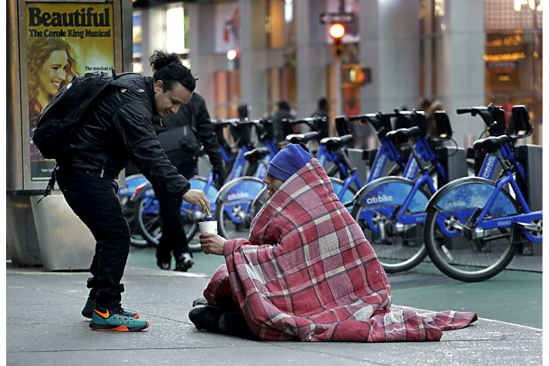

Helping the Homeless
- Donate to Homeless Shelters: Many shelters rely on donations of money, food, clothing, and hygiene products. Contact local shelters to find out what they need most.
- Volunteer: Many organizations and shelters need volunteers to help with tasks such as serving meals, organizing clothing drives, or providing support services.
- Offer Food: Prepare bagged lunches or distribute snacks to homeless individuals you encounter. Consider organizing a group to do this regularly.
- Provide Hygiene Kits: Create hygiene kits containing essentials like toothbrushes, toothpaste, soap, shampoo, and sanitary items. Distribute these to homeless individuals.
- Support Affordable Housing Initiatives: Advocate for and support policies and initiatives aimed at creating more affordable housing in your community.
